HOWTO IGEL
IGEL KB: How to Start with IGEL
IGEL Advanced Services - IGEL Migration Package
Free Class: Introduction to Linux (LFS101)
- Develop a good working knowledge of Linux using both the graphical interface and command line across the major Linux distribution families with this free training course.
IGEL Cloud Services and Support
Currently, the IGEL Cloud Services and apps available in the IGEL App Portal are stored in Azure Region West-Europe, location Amsterdam. The associated app metadata are stored in Frankfurt (Germany west central).
The Insight Service data are currently also stored in Frankfurt (Germany west central).
All data centers and their operators are fully ISO/IEC 27001 certified.
Q: What is the IGEL Cloud Services SLA?
A: System Availability SLA for IGEL Cloud Services is 98.50% System Availability during each calendar month, excluding any scheduled maintenance windows and emergency maintenance.
Q: How to contact IGEL for support?
A: IGEL KB: Using the IGEL Customer Portal
Q: How to manage users and roles in the IGEL Customer Portal?
A: IGEL KB: Managing Users and Roles in the IGEL Customer Portal
NOTE: Minimum viable product
FAQ - IGEL Education
Q: What are the training options for IGEL?
A: Please enroll in IGEL Academy for formal training courses on IGEL products geared towards beginners and experienced users alike.
FAQ - IGEL Topology
Q: What has changed with IGEL network topology?
A: Details on the different network topologies.
FAQ - Time Service
Q: Do I really have to have the correct time / date on all my computers?
A: YES! In SSL, clocks are used for certificate validation. The client needs to make sure that it talks to the right server; for that, the client will validate the server's certificate. Validation implies verifying a lot of things; two of them involve clocks:
- The server's certificate (and all involved CA certificates) must include the present time in their validity time range. Each certificate as a notBefore and a notAfter fields; the current time must fall between these two dates.
- The client is supposed to obtain the revocation status of each certificate, by obtaining (and validating) a CRL (Certificate Revocation List) from the appropriate issuers (the CA). A CRL is deemed acceptable if (in particular) it is "not too old": again, the CRL has a thisUpdate field that says when it was produced, and a nextUpdate field that more-or-less serves as expiration date for the CRL.
If the client's clock is off, then it will break either or both of these functionalities. For instance, the server's certificate will be considered as "long expired", or "Invalid server certificate: certificate is not yet valid", leading to rejection.
- OS 12:
Setup > System > Time and Date > Use NTP time server - OS 12:
NTP time serverpool.ntp.org - OS 12: Check that time NTP is enabled:
get system.time.ntp_enabled - OS 12: Check NTP time server:
get system.time.ntp_timeserver
Additional details on setting up time and date:
FAQ - Licensing and Support
Q: How is IGEL licensed and what happens when licenses expire?
A: Here are some notes:
Q: What are the IGEL OS editions and feature packs?
A: IGEL KB: IGEL OS Editions. Existing customers will be migrated to Standard Edition.
Q: How to troubleshoot licensing problems?
A: Troubleshooting Common IGEL Licensing Problems
Q: What are the levels of IGEL Support Services?
A: IGEL offers three levels of support – Select, Priority and Plus. IGEL Support Services
Q: What is the product lifecycle for IGEL products?
A: IGEL KB: IGEL Product Lifecycle
Q: How do I convert OS 11 licenses to OS 12 licenses?
A: No conversion needed. Your normal WE licenses work with OS 12. There is not a specific license type for OS 12.
Q: What is needed for UMS 12 to support OS 11 licensing?
A: EMP will need to be created from WP licensing. IGEL KB: How to Use IGEL OS 11 with IGEL Subscription - Create an EMP Product Pack from a WE Product Pack
Q: Can UMS 12 remove licenses in the ILP for deleted OS 12 devices?
A: Yes! Details can be found here - HOWTO Remove IGEL Device License
Q: What happens when a license expires?
A: Details can be found here - IGEL KB: Entitlements that Come with an IGEL Platform Access Subscription (PAS) and Effects of Expiry
Q: Does UMS 12 support demo license automatic deployment?
A: Yes! As of UMS 12, demo licenses for IGEL OS 12 and IGEL OS 11 devices are supported by Automatic License Deployment. IGEL KB: UMS 12 License Deployment
Q: How to automate license renewal?
A: Use UMS UMS Automatic License Deployment. UMS checks registered devices every 24 hours for unlicensed devices and will issue a new license. In UMS UMS Console > UMS Administration > Global Configuration > Licenses > Deployment enable automatic license exchange and select Licenses are exchanged [number] days before expiration: Defines how many days before the expiration date a new license should be deployed. (Default: 7). IGEL KB - License Deployment
Q: How does hardware-bundled IGEL licenses work?
A: Hardware-bundled IGEL license will be purchased together with hardware manufactured by an IGEL Hardware Partner. This type of license, will be a IGEL PAS (Platform Access Subscription) which is deployed based on the serial number of the device it is sold with. The license can be deployed automatically through the Universal Management Suite (UMS) or manually through the IGEL Licensing Portal (ILP). The license can be separated from its hardware and can be deployed on a different device. IGEL KB: Hardware-Bundled IGEL License Deployment
Q: How to remove expired / unused licenses from UMS?
A: There is also a new Administrative Task available in UMS 12.06 that will remove expired / unused licenses from UMS.
Q: We have a customer, which is migrating to another provider. How can we migrate an entire Product Pack from one licensing portal to another?
A: Reach out to your IGEL Sales Rep or partner. There are legalities to this that need to be confirmed, and paperwork that needs to be submitted by both sides. Once everyone approves, usually the licenses can then be transferred. If you don't have a direct IGEL Sales contact, you can try submitting a license question request via the IGEL Customer Portal. There is a button for this on the landing page.
Q: How to remove an IGEL license completely?
A: IGEL KB: How To Remove an IGEL License Completely
Q: Where is the UMS license file stored?
A: The UMS license file is located here: /opt/IGEL/RemoteManager/rmguiserver/ums_license.lic
Q: How to update UMS license file from the command line?
A: Here are the commands to show license state and to update license for UMS
- Show state of UMS license:
1 | |
- Register a new license file:
1 | |
FAQ - UMS
Q: What steps to perform post install of UMS?
A: IGEL KB: Post-Installation Configuration of the IGEL UMS Server. Also make sure to create a new endpoint web certificate that has all the IP addresses, Fully Qualified Domain Names, short names, and localhost that the device can connect to. See below for steps
Q: How to validate certificate chains supplied by the UMS Server
A: Run the following command (replace UMS-SERVER-FQDN with your UMS server FQDN or IP address):
1 | |
Q: UMS cannot connect to the database after the update to UMS 12.04.100
A: This is fixed in UMS 12.04.110. IGEL KB: Known Issue: UMS Cannot Connect to the MS SQL Database
Q: What Antivirus settings should be set on my Windows server prior to UMS installation?
A: IGEL KB: Best Practices: Antivirus Configuration on IGEL UMS Server
Q: What is new in UMS 12?
A: IGEL KB: What Is New in IGEL UMS 12?. UMS release notes
Q: How to check the status of UMS server?
A: Open browser and connect to server on installed port (8443 or 443):
1 | |
1 | |
Q: Is search Broken in 12.02.100 UMS Web?
A: If you upgraded to 12.02.100 and your UMS Web search results return NOTHING, it's because you have 'UD Pockets' in your environment. (See the IGEL KB: UMS 12.02.100 Known issues). Simply deleting all your UD Pockets from UMS, and waiting until the next index (hourly) will fix your Search. A new UMS 12.02.x version in the works to correct this issue.
Q: We noticed that UMS 6 is no longer listed on IGEL download site. We are not ready to move to UMS 12.
A: UMS 12 is the next version of UMS 6.x.x and supports OS 11 only environments as well as mixed OS 11 / OS 12 environments.
Q: How are OS 12 profiles created or modified?
A: UMS Web App MUST be used to create / modify OS 12 profiles.
Q: When will proxy mode support for UMS 12 be released?
A: As of 31 July 2023, UMS 12.02.100 has proxy mode support.
Q: What is feature matrix between UMS Web App and UMS Console?
A: Here is link to IGEL KB: Feature Matrix: UMS Web App vs. UMS Console
Q: I'm able to shadow from UMS Web App but cannot shadow from UMS console running on my PC. Why?
A: Shadowing from UMS Web App triggers the UMS Server to initiate a VNC session for shadowing. The VNC session is routed through the UMS Server. IGEL KB - UMS and Devices: Secure Shadowing
- NOTE: If web app shadow in browser is lost / hung, then try refreshing the web page.
Q: How to fix Slow VNC shadowing with 4K screens?
A: Enable network.vncserver.snapfb VNC option in registry.
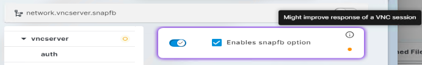
Q: How to see the App Portal from Web App? I upgraded from UMS 6 to UMS 12 and cannot see the App Portal.
A: Open UMS Console and add General - WebApp > App Management > Allow permission to account(s). Steps:
- Start
UMS Console - Select
System>Administrator accounts - Select Administrator account
EditGeneral - WebAppselectAllow
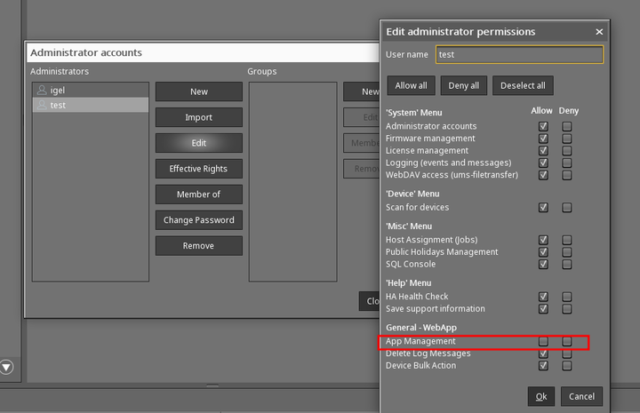
Q: Having permission issues for some accounts pulled from Active Directory (AD)
A: If you are using multiple domain groups for rights, then check to make sure the accounts are not in domain groups that do not have the correct permissions
Q: I reset / rebuilt my OS 12 device and now get error (#38) when trying to connect to UMS.
A: See IGEL KB - Troubleshooting: Error 38 during the Onboarding of an IGEL OS 12 Device
Q: Trying to connect OS 12 to UMS using the one-time password method but I get this message: could not manage your device because of an internal error (#45).
A: You may have to create a new endpoint web certificate that has all the IP addresses, Fully Qualified Domain Names, short names, and localhost that the device can connect to. Steps:
- Start
UMS Console - Open
UMS Administration - Select
Global Configuration>Certificate Management>Web - Add new endpoint web certificate with all the IP addresses, fully qualified domain names (FQDN), short names, and localhost that the device can connect to
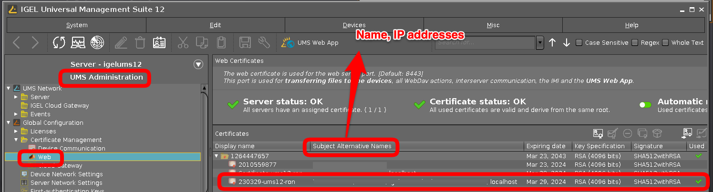
NOTE: Web Certificates
- The web certificate is used for the web server port (Default port: 8443)
- This port is used for transferring files to the device, all WebDav actions, interserver communication, the IMI, and the
UMS Web App. - Additional details IGEL KB: Creating the End Certificates
- Video showing steps to create and enable a new web cert
- Delete the obsolete (automatically created) UMS web certificates and restart the UMS server.
Q: When changing the Root CA for UMS Web Certificate does that impact the IGEL OS 12 clients in any way?
A: If you change the Root CA, you need to ensure it is distributed to the devices prior to swapping the chain on the UMS server itself
Q: How do I use rmagent-register to register OS 12 device to my UMS?
A: Follow steps to test rmagent-register
- Start
UMS Console - Open
UMS Administration - Select
Global Configuration>First-authentication Keys - Select
(+) - Create
Mass-deployment keywithFirst-authentication keyTRY-IGEL
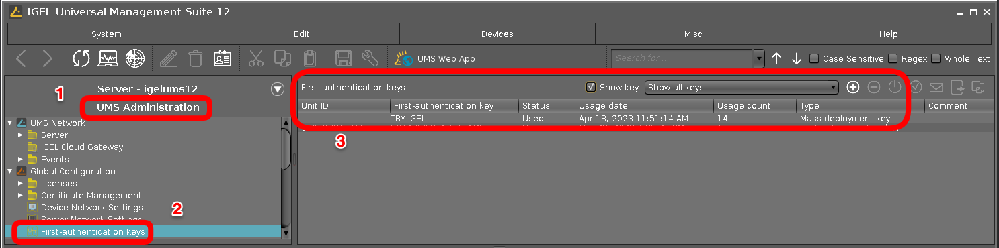
-
On IGEL OS 12 open a
Terminalwindow as root and type1rmagent-register -s UMS-SERVER-NAME-OR-IP -p 8443 -a TRY-IGEL
Q: What are the steps to upgrade UMS 6 to 12 on Windows?
A: IGEL KB: UMS Installation and Update
Q: What can be done to increase performance for UMS?
A: Make sure you have met requirements for IGEL KB: RAM and vCPUs, IGEL KB: performance optimizations, and IGEL KB: Java heap size
Q: Having issues joining OS 12 devices to UMS 12 server running on Windows 11. How do I debug?
A: UMS server is not supported on Windows 11. Please select a supported OS and reinstall UMS. IGEL KB: Supported Environment UMS 12
Q: How to limit bulk actions for UMS help desk users?
A: UMS WebApp has a layer of security to only allow actions on a single device - Permission > General - WebApp > Device Bulk Action.
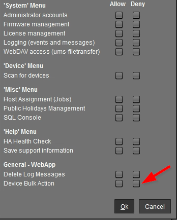
Q: UMS public facing IP address changed. What needs to be updated in UMS?
A: Change the public address of UMS server: UMS Administration > UMS Network > Server > Your_UMS. Create a new endpoint web certificate that has all the IP addresses, Fully Qualified Domain Names, and short names that the device can connect to see details above.
- Verify UMS Server settings for IP addresses and ports:
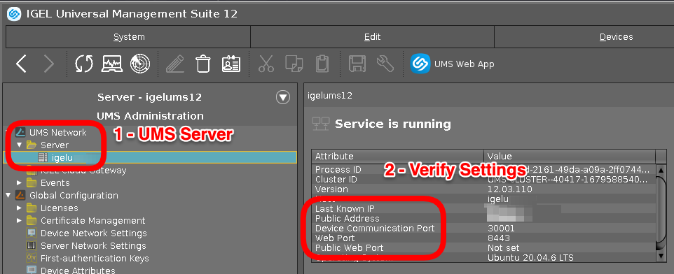
Q: How to add Microsoft Entra ID Auth in front of the IGEL WebUMS?
Q: How to remove apps from UMS?
A: IGEL KB: How to Delete Apps in the IGEL UMS Web App. The following SQL query can be used to search for profiles using an app.
1 2 3 4 5 | |
Changing the where clause of the SQL query to the appropriate APP_NAME and APP_VERSION will help to identify similar cases with other Apps.
For other apps get a list of all "App Names" using this SQL query:
1 | |
-
IGEL KB: General Administrator Rights in IGEL UMS - Misc Menu - SQL Console
-
IGEL KB: Menu Bar of the IGEL UMS Console - Misc - SQL Console
Q: How to make devices download from App Portal when UMS is configured as the App Proxy as the Global Setting?
FAQ - OS 12
Q: What are the differences between OS 11 and OS 12?
A: Here are some items:
- OS 12 is modular vs OS 11 monolithic firmware
- OS 12 is considered a Base Application and you only deploy the applications you need directly from our App Portal
- Apps are imported (metadata only or with binaries) and endpoints internal/external by default pull their apps from our App Portal (no firmware repositories needed)
- OS 12 uses a unified protocol over 8443
- OS 12 works with both traditional ICG or via more modern Reverse Proxy for managing external devices
- UMS 12 manages both OS 11 and OS 12 devices
- OS 12 has a more modern look and feel overall with a functional system tray for user configs like monitor config, date/time, mouse speed, Bluetooth, WiFi etc.
- OS 12 Profiles are based on the application associated rather than the profile having 10,000 settings .. It only presents the settings relevant for the associated application (Base system, or App like AVD, Citrix, Omnissa, Parallels RAS, etc).
- Associating an App to a profile, and associating the profile to the device folder will install the associated application
- Removing the profile will also remove the application (or hide it) if it is directly assigned at a higher level
- Licensing is much more streamlined and integrated between the License Portal and UMS for realtime usage/assignment with OS 12
- Features with OS 12 like dual boot for DR and IGEL Managed Hypervisor that provide more security focused use cases.
- OS 12 offers an Onboarding Feature that works in conjunction with
OpenID Connect(Entra, PingID, Okta, etc.), to onboard external devices to your UMS with just an email address.
Q: What version of Linux is IGEL OS 12?
A: IGEL OS is IGEL's own version of Linux. IGEL OS uses Debian / Ubuntu libs. Details on what is included in a specific build can be found in file /etc/os-release. Details on the kernel and device can be found by running hostnamectrl
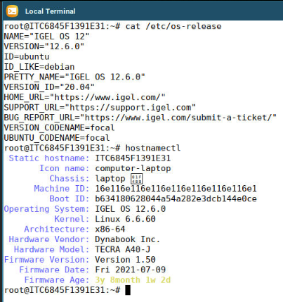
Q: How can a user change settings on IGEL OS?
A: IGEL KB: Tray Applications in IGEL OS 12
Q: Is OS 12 considered an App?
A: Yes, OS 12 is an app like Microsoft AVD, Citrix, Omnissa Horizon, etc. IGEL KB: IGEL OS 12 Apps: IGEL OS Base System
Q: What are the hardware requirements for OS 12?
A: IGEL KB: Devices Supported by IGEL OS 12
Q: I want to quickly test out OS 12. What are the steps to test?
A: See the following note: Want to test out OS 12 with App Portal without UMS 12
Q: I'm testing OS 12 and want to reset a device and remove trial license. How do I do that?
A: See the following note: How to reset a device
Q: Does OS 12 support SCCM deployments?
A: Yes. Mass deployment of IGEL OS 12 Base System via SCCM is possible – offered via tool and corresponding image of OS 12. Link to Download. IGEL KB: IGEL OS SCCM Add-On. HOWTO Light and Zero Touch Deployments of OS 12
Q: Does OS 12 support PXE boot deployments?
A: Yes. See the following note: IGEL KB: How to Deploy IGEL OS 12 with PXE
Q: How to enable Citrix username / password auto login support in cloud environment be supported?
A: Enable HTTP Basic in Storefront.
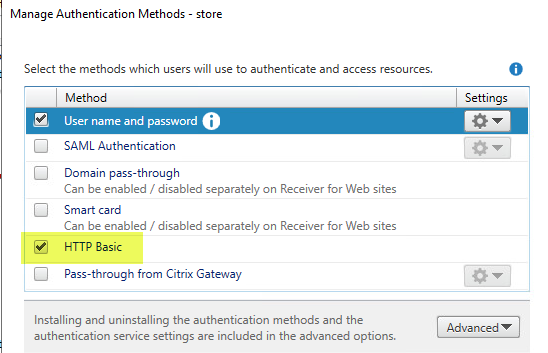
Q: When using the first-time auth key to connect OS 12 to the UMS 12 it asks for a communication token - where is this found?
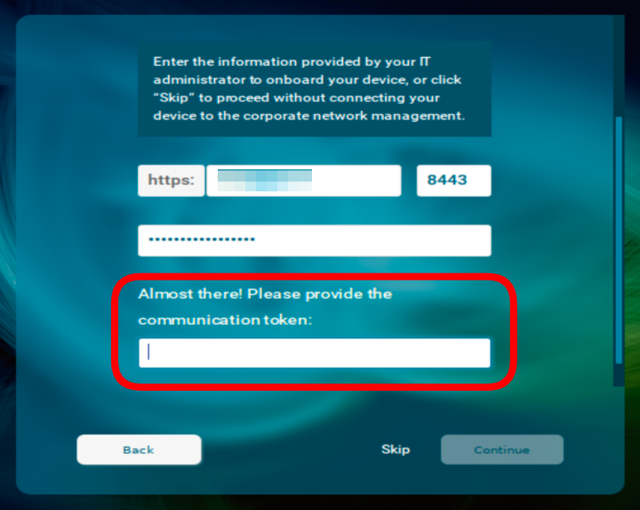
A: This is only shown if a public certificate is not used. It is the third fingerprint of the root web certificate for your UMS 12. Details can be found in IGEL KB: Deploying a Certificate Chain with a Public Root CA
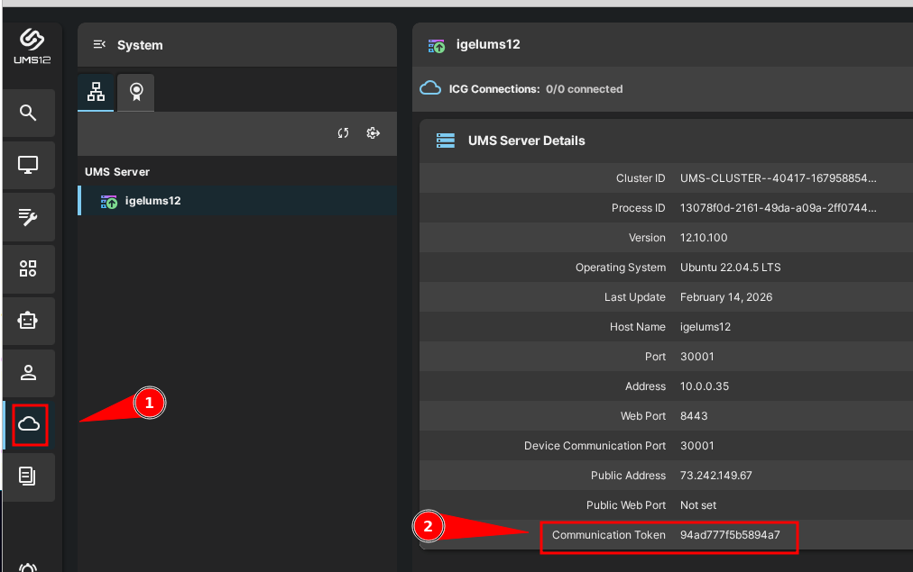
Q: OS 12 missing System > System Customization > Custom Commands > Post Session. Need to logoff/reboot the endpoint when a user disconnects from a Citrix Self-Service session. When will this feature be released?
A: For OS 12 this feature is pending release.
Q: How to enable audio on Dell Wyse 5470 AIO?
A: Change value in the registry to either 1 or 8 for system.sound_driver.snd_hda_intel.probe_mask and reboot.
Q: Having issue with 802.1X authentication, what can be done?
A: Change the following registry key from 1 to 5: network.interfaces.ethernet.device%.ieee8021x.auth_attempts
Q: How to automatically set timezone based on geo location the client is in?
A: IGEL OS automatic Time Zone sync based on geo location detection
- Sample curl commands
Q: How to reduce reduce network traffic back to UMS when WIFI roaming?
A: Set network.interfaces.wirelesslan.device0.roam_refresh_dhcp to False in the Registry to reduce connections back to the UMS servers. Without setting to false as the device travels, it may download profiles and settings from UMS every time it switches WIFI access point.
Q: Can the IGEL OS install from USB drive be customized with settings to speed up the imaging process?
A: Yes! Here are some links with steps to customize IGEL OS install from USB stick:
Q: Having issue installing applications and getting error: Update: Failed getting metadata from all APP Portals
A: This error message typically indicates that there is something blocking access to the remote IGEL App Portal, or that there is a proxy server that is doing SSL inspection. Run the following command to check for blocking or proxy server that is doing SSL inspection (send results to your network team to review):
1 | |
Q: How to setup a restricted web browser in full screen?
A: With OS 12.5.1 or greater there is an igel-minibrowser that can be used.
- Launch
minibrowserpointing to IGEL Community Docs - Set
minibrowserto fullscreen
1 2 | |
Q: How to create shortcuts to tray applications?
A: How to Create Shortcuts to Tray Applications in IGEL OS 12
Q: How to access tray applications and settings from command line / scripts?
A: Run the following command to see options for tray applications:
1 | |
Q: Getting xdg-open popup from browser. How to remove xdg-open popup?
A: Set custom policy to remove the popup.
- Citrix:
1 | |
- Horizon:
1 | |
Q: Having issue with wifi and cannot connect to iPhone Personal Hotspot. How to reset networking?
A: Run the following commands as root to reset networking:
1 | |
Q: How to determine battery level on Apple Magic Mouse?
A: Use upower to query the device.
FAQ - OS 11 to OS 12 Upgrade
Q: What is required of OS 11 device to upgrade to OS 12?
A: At least 4GB RAM and 8GB Disk is needed for OS 12. IGEL KB: Devices Supported by IGEL OS 12
Q: How do I upgrade an OS 11 device to OS 12?
A: OS 11.10.210 and UMS 12.06.110 or higher is required to upgrade to OS 12. Additional details can be found here: IGEL KB: Upgrading from IGEL OS 11 to IGEL OS 12
Q: What is required to update UD Pocket with OS 11 to OS 12 without UMS?
A: IGEL KB: Steps to install new OS on UD Pocket
Q: How to debug OS 11 to OS 12 upgrade?
A: Open a terminal window as root on OS 11 device and run the following command prior to starting the upgrade: journalctl -f
Q: My device has less than 4GB of RAM, is there a workaround for upgrading to OS 12?
A: Yes, open the registry (Setup > System > Registry) and enable system.upgrade_igelos.ignore_memory_requirement
Q: Can an OS 11 device with Custom Partitions be upgraded to OS 12?
A: Custom Paritions will need to be removed prior to the upgrade to OS 12. OS 12 supports Custom Partitions but they have to be created for OS 12 in the UMS Web App. NOTE: There is a registry setting that can be enabled to delete Custom Partions as part of the upgrade process (system.upgrade_igelos.delete_custom_partition).
Q: What is the command line used on OS 11 device to start the upgrade to OS 12?
A: Once you have validated, as noted above, that the system is ready for upgrade, then the following command is called: /etc/igel/upgrade-igelos/upgrade
FAQ - ICG 12
Q: Is ICG 12 needed with UMS 12 for OS 12 devices not on the same network as the UMS 12?
NOTE: Reverse proxy with SSL offloading is possible as of UMS 12.02. See Configure the UMS to Integrate Reverse Proxy with SSL Offloading
A: That depends on if your security team will allow UMS 12 on port 8443 to be opened to the Internet or connected to internet via reverse proxy (such as F5 / NetScaler / Azure Application Gateway). If the above options cannot be met, an ICG 12 will be needed to support OS 12 devices. Similar sizing guidelines for ICG 12 (setting connection limit to 2K / 2.5K devices). See IGEL KB: ICG 12 and IGEL KB - IGEL Cloud Gateway vs. Reverse Proxy for the Communication between UMS 12 and IGEL OS Devices
- Starting with UMS 12.04, IGEL is now compatible with all industry standard reverse proxies.
- Video: Proxy vs. Reverse Proxy
Q: To secure reverse proxy, what are the paths that need to be enabled?
A: UMS endpoint paths for Reverse Proxy integration. The used/required paths for OS 12 and UMS Web App:
- The paths required for OS 12 device connections to the UMS (via a Reverse Proxy) are:
1 2 3 4 5 6 7 8 9 10 11 12 13 14 15 16 17 18 19 20 21 22 | |
Q: How is the Universal Management Suite (UMS) and IGEL Cloud Gateway (ICG) integrated with Network components like Firewalls and Reverse Proxies?
A: IGEL KB: IGEL Universal Management Suite Network Configuration
Q: Does ICG 12 support OS 11 devices?
A: Yes!
Q: I upgraded my UMS and ICG to 12 and I am now getting Could not manage your device because of an internal error (#37) when trying to connect OS 12 devices. What are the steps to fix this item?
A: Remove the cert chain from UMS completely, reboot the ICG's and then reconnect to them from UMS. Generate a new ICG certificate in UMS 12.
Q: IGEL OS devices are reconnecting to ICG 12.01.100 every 30 minutes. How can this be fixed?
A: Details on fix can be found here: IGEL KB: Configuration of Unlimited Session Timeout for ICG 12.01.100
Q: Having issues connecting to ICG. How to check ICG server status?
A: Make sure NTP time service is running on all devices (IGEL OS, ICG and UMS). Open a browser session to check status from IGEL OS device:
1 | |
Q: Having issue with ICG remote installer from UMS.
A: Make sure that SSH is running on ICG server and that the account used from UMS has sudo rights. IGEL KB: ICG How-Tos - Giving a User sudo Privileges. Linux setup example can be found in IGEL Community Docs HOWTO Setup Lab Sandbox Environment - Optional - Install ICG from UMS
Q: The ICG OS 12 Management Connection shows as disconnected. What can be checked / validated?
A: Review the following items:
- Giving the UMS an Public Address via UMS Network > Server > Servername rightclick on it and setting the Public Address + Default Port for example ums.server.com.
- Giving the IGEL Cloud Gateway the exact External Host + Port that can be pinged from outside your LAN.
- Reinstalling ICG with Certificate.
Q: Using NGINX as reverse proxy and getting the following error in NGINX ssl-error.log file when uploading large files (such as applications created with IGEL App Creator): "Client intended to send too large body"
A: Change the client_max_body_size to 400m or as needed for largest file upload.
FAQ - Onboarding Service (OBS)
Q: Is OBS a substitute for ICG (IGEL Cloud Gateway)?
A: OBS is not an alternative for ICG or reverse proxy for secure device communication beyond your company network.
Q: What are the steps to setup OBS?
A: IGEL KB: Initial Configuration of the IGEL Onboarding Service (OBS)
Q: In the Customer Portal for OBS registration must the UMS hostname be entered in lowercase?
A: Please pay attention that hostnames should be spelled everywhere the same way (case-sensitive). The UMS hostname specified during the configuration of the IGEL Onboarding Service must be written exactly as in the UMS.
Q: What are the steps to onboard an OS 12 device?
A: IGEL KB: Onboarding IGEL OS 12 Devices
Q: What is the OBS sequence for registering an OS 12 device?
A: The sequence
sequenceDiagram
participant A as IGEL OS 12
participant B as UMS 12
participant C as OBS
participant D as Service Hub
participant E as Customer IDP (EntraID, Okta, Ping Identity)
A->>C: 1 - Request Onboarding Params from email
C->>D: 2 - Request IDP from email
D->>C: 3 - Respond with IDP Credentials
C->>E: 4 - oAuthLogin on IDP
E->>C: 5 - ID Token
C->>D: 6 - Request OBS Params
D->>C: 7 - Respond with OBS Params
C->>A: 8 - Send OBS Params to IGEL OS
A->>B: 9 - Initiate OnboardingQ: How to test OBS connection?
A: Open web browser and connect to https://obs.services.igel.com/auth/user@domain.com. Use the browser developer tools to look at returned content. Here is link to Chrome DevTools
Q: What do the error codes from onboarding mean?
A: IGEL KB: Troubleshooting: Possible Error Codes During the Onboarding
Q: OBS connection issue for UMS server with long server name in cloud hosted server. How can I change UMS server name?
A: Open UMS Console > UMS Administration, right click on UMS Network > Server > your UMS server choose edit and replace super long UMS hostname with shortened FQDN - Max length for FQDN is 32 characters.
FAQ - Single Sign On (SSO)
Q: Does IGEL SSO with OS 12 work with OpenID Connect?
A: Yes! IGEL SSO with OS 12 will work with identity provider (IdP) that supports OpenID Connect. IGEL KB: Apps and Utilities for IGEL OS 12 That Support SSO with OpenID Connect (Generic)
Q: How IGEL SSO Work?
A: With IGEL single sign-on, users sign in once with a single account and get access to multiple applications. The application can be a local client (e.g., AVD), web, or single page application (on browser), regardless of platform or domain name. When the user initially signs into the IGEL login screen, Identity Providers:
- Microsoft Entra ID (aka Azure AD)
- OpenID Connect (Generic)
- Okta
- Ping Identity / PingOne
- VMware Workspace ONE Accesss
persists a cookie-based session. Upon subsequent authentication requests, the Identity Provider reads and validates the cookie-based session and issues an access token, without prompting the user to sign in again. If the cookie-based session expires or becomes invalid, the user is prompted to sign-in again. A web, local app, or single page application can be protected by an OAuth2 access token, ID token, or SAML token. When a user tries to access a protected resource on the app, the app checks whether there is an active session on the application side. If there is no app session or the session has expired, the app will take the user to the IdP's sign-in page.
Q: How to enable SSO via a cloud-based identity provider (IdP) to enable access to the local OS 12 device and applications?
A: With IGEL OS 12, you can use Single Sign-On (SSO) via a cloud-based identity provider (IdP) to access the local device and apps. IGEL KB: Configuring Single Sign-On (SSO)
Q: What is the process workflow for how SSO works between web apps, Microsoft Entra ID (aka Azure AD) / Okta and IGEL OS 12?
A: Here is the workflow.
sequenceDiagram
participant A as Unauthenticated OS 12 Device
participant B as Authenticated OS 12 Device
participant C as Identity Provided (Microsoft Entra ID / Okta)
participant D as Web Application / VDI
A->>C: 1 - User inputs credentials and MFA details if required
C->>B: 2 - Authenticated user receives a session cookie and gains access to IGEL Desktop
B->>D: 3 - User opens SSO configured web app / VDI
D->>B: 4 - Session cookie is validated and grants secure access to the requested web app / VDI resource
B->>A: 5 - Session cookie is cleared on logout / reboot / shutdownQ: How to configure SSO on IGEL OS?
A: IGEL KB: Single Sign-On in IGEL OS 12
FAQ - Microsoft AVD
Q: How to pass Microsoft Excel keyboard shortcut keys?
A: Microsoft Excel keyboard shortcut keys can be passed to AVD session by enabling System > app > avd > avd% > options > remote-keymapping. In OS 11 System > Registry > sessions.wvd%.options.remote-keymapping
Q: How to grab keyboard?
A: Enable grabkeyboard in AVD profile app.avd.sessions.avd0.options.grabkeyboard > Grab whole keyboard (Enabled)
Q: How to restrict AVD access ONLY from IGEL endpoints?
Q: How to enable smart card authentication support for Azure Virtual Desktop (AVD)?
A: IGEL smart card Auth to Azure Virtual Desktop
Q:: How to enable smart cart authentication support for Windows 365?
A: IGEL OS 12 Smart Card Authentication to Windows 365! – Here is the How-To!
Q: How to enable IGEL OS for secure certificate-based authentication with EntraID and smart cards in environments combining Windows 365 and Azure Virtual Desktop?
Q: Having issues logging into AVD and getting error code 50058
A: Enable the following AVD session number % in the registry for AVD app:
app.avd.sessions.avd%.options.compact-login-view
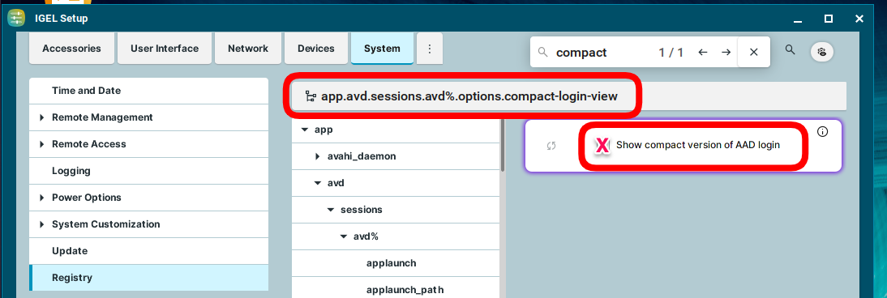
Q: Can Yubikey be used for connecting to AVD?
A: IGEL Announces FIDO2 Auth to Windows 365 and Azure Virtual Desktop! And it is around the corner!
Q: Can IGEL OS use security keys with CAC/PIV?
FAQ - Omnissa Horizon
Q: Having performance issues with Omnissa Horizon and BLAST protocol. What can be done?
A: Most performance issues are resolved in Horizon / BLAST with dri3. Enable the following in the registry for the respective x driver:
1 2 3 4 5 6 | |
Q: How to configure Chromium to sign in and switch over to Omnissa without the xdg-open prompt?
A: Set the following Chromium custom policy:
1 2 | |
FAQ - Microsoft Windows 365
Q: Looking for setup and notes for Microsoft Windows 365
Q: User gets prompt "Need admin approval" on IGEL Windows 365 startup.
A: IGEL KB: Steps to grant tenant-wide admin consent to the IGEL Windows 365 app
FAQ - Networking
Q: How to setup Cisco ISE (IEEE 802.1x)
A: The setup:
- The devices must meet (DHCP IGEL tag) + (Port 30001) requirements
- Then allowed to access the UMS, SCEP, Imprivata servers for initial Imaging
- Then, 802.1x LAN IGEL policy is applied and they Authenticate via TLS properly to LAN.
- Then the network is open for the device.
Have Cisco ISE engineer use (DHCP IGEL tag) + (ITC* hostname) to fingerprint the device and apply an "IGEL Device for Imaging" ISE Policy. This allows access to SCEP, UMS, Imprivata, etc until 802.1x kicked in. Use the same certificates that is already setup for Cisco ISE Wireless. If 802.1x Auth fails, then it attempts a normal LAN connection. So it's safe to test. You'll need a Cisco ISE engineer to see in their logs that it was successful.
Q: Using OS 12.6.1 with SCEP/802.1x certificates for network connections? Newly issued certificates may no longer work with 12.6.1
A: Try creating symbolic links for the Intermediate and Root certificates from /wfs/ca-certs/tls/ to /wfs/ca-certs/.
1 | |
- Also, make sure the original certificate files in /wfs/ca-certs/tls/ have the correct permissions set to 644. Here is script to automate this:
1 | |
- Note from IGEL support on 13 May 2025:
There is a new mechanism in 12.6.1 that runs a check on every certificate in /wfs/ca-certs - and if this is not in Base64 x509 format, the certificate is removed. For now, please continue raising support cases - and for workarounds, please consider:
- Downgrade to 12.6.0 or earlier where you certificates are recognised
- Wait for the scheduled fix (confirmed from our developers as 12.8)
- Consider using x509 format certificates instead of your current ones
- Upload your certificates as 'Undefined' file type in UMS and place somewhere else other than /wfs/ca-certs
FAQ - Device Specific Data
Q: How to extend UMS for device specific data like location, department, or attached hardware?
- Set UMS Structure Tag with the city the device is currently in
1 2 3 4 5 6 7 8 9 10 11 12 13 | |
- Public facing IP
1 | |
- All information on device location
1 | |
FAQ - OS 12 App Creator Portal
Q: How can I create and distribute my own applications for OS 12?
A: The IGEL App Creator Portal can be used to create OS 12 applications
Q: What UMS Web App Settings are needed to distribute apps UMS?
A: The following needs to be set:
- UMS Web App - Apps Settings:
Download from UMSand do not setBlock devices from downloading apps from the public App Portal as a fallback optionunless there is no internet access from OS 12 devices
NOTE:
- Using the UMS update proxy and distributing OS 12 apps through ICG is not supported. As an alternative, you can use a reverse proxy between IGEL OS devices and UMS. For more information, see IGEL KB: IGEL Universal Management Suite Network Configuration and IGEL KB: Configure the UMS to Integrate Reverse Proxy with SSL Offloading.
FAQ - Advanced Device Redirection
Q: What is Advanced Device Redirection (ADR)?
A: Enhance Your Virtual Desktop Experience with Advanced Device Redirection
Q: When is Advanced Device Redirection (ADR) needed?
A: If the native IGEL app or API supports the attached devices and any needed drivers are in IGEL OS then Advanced Device Redirection is NOT needed. The advantage of Advanced Device Redirection is that it will work without needing to add anything to IGEL OS or have IGEL app / API dependencies.
Q: What is needed to setup Advanced Device Redirection (ADR)?
A: IGEL KB: IGEL Advanced Device Redirection USB
FAQ - Distributed App Repositories in IGEL UMS
Distributed App Repositories can help to securely distribute apps to locations with no internet connection or low bandwith. You can find more information on the benefits, use cases and best practices in the IGEL Blog: The Power of a Distributed App Repository: Enabling Access for Offline and Low-Bandwidth Environments.
By enabling and configuring this feature, binaries of apps will be stored on a self-hosted WebDAV server. Devices can then download the binaries of those apps from the WebDAV server, but the metadata will still be downloaded from the UMS Integrated App Repository or the IGEL App Repository.
Q: How to setup Distributed App Repositories in IGEL UMS?
A: Please review the following links:
- IGEL KB: How to Use Distributed App Repositories in IGEL UMS
- Setting Up a WebDAV Server on Ubuntu and Debian
- APACHE web server and SSL authentication
FAQ - Distributed Peer Update (Buddy Update)
The Distributed Peer Update (DPU) feature in IGEL OS 12 (formerly known as Buddy Update in IGEL OS 11) allows IGEL OS 12 devices to act as local update servers. Instead of each device downloading updates from the central update server, peer devices get the updates from each other. This reduces bandwidth usage and speeds up update delivery, especially in geographically distributed networks.
Starting from IGEL OS 12.7.4, the IGEL Discovery service allows endpoint devices on the same local network to automatically find and obtain updates from one another. IGEL Discovery uses an UDP-based mechanism to detect available update sources on the local network and provides an interface that update components use to determine update availability and select an appropriate update source automatically.
flowchart TB
%% Update Server
US[Update Server]
%% Internal Network Boundary
subgraph IN["Internal Network"]
direction TB
C1[Client 1]
C2[Client 2]
C3[Client 3]
C4[Client 4]
C5[Client 5]
end
%% Connections
US --> C1
US --> C2
US --> C3
US --> C4
US --> C5
%% Styling (optional)
style US fill:#66bb33,color:#ffffff,stroke:#3d7f1fflowchart TD
%% Update Server (External)
US[Update Server]
%% Internal Network Boundary
subgraph IN["Internal Network"]
direction TB
BUS[Distributed Peer Update Server]
C1[Client]
C2[Client]
C3[Client]
C4[Client]
C5[Client]
C6[Client]
end
%% External to Internal Communication
US <--> BUS
%% Peer Server to Clients
BUS --> C1
BUS --> C2
BUS --> C3
BUS --> C4
BUS --> C5
BUS --> C6
%% Styling (optional)
style US fill:#66bb33,color:#ffffff,stroke:#3d7f1f
style BUS fill:#1f78d1,color:#ffffff,stroke:#0b3d73Q: How to setup Distributed Peer Update?
A: Please review the following links:
-
IGEL KB: How to Configure Distributed Peer Update with IGEL OS 12 Devices
-
IGEL KB: Distributed Peer Update Server Configuration in IGEL OS 12
-
Assign Apps to the IGEL OS device running Distrbuted Peer Update server as noted in IGEL KB: Apps - Import and Configure Apps for IGEL OS 12 Devices via the IGEL UMS Web App
Q: What log files to review for Distributed Peer Update?
A: Log files for Distributed Peer Update:
-
OS 12 Distributed Peer Server:
/var/log/igel/igel-buddy-server.log -
OS 12 Client: Run the following command as root:
1 | |
Q: For OS 12.7.4+ are Distributed Peer Update servers shown by running igelpkgctl update?
A: No, igelpkgctl update will not show Distributed Peer Update servers
Q: Does Distributed Peer Update work with apps create by IGEL App Creator?
A: As of 18 December, 2025 the Distributed Peer Update does NOT support IGEL App Creator apps. This will be fixed in a future version
Q: Having issue with Distributed Peer Update and need to open a support ticket, what is needed to be collected from OS 12 server and OS 12 client?
A: Set the debug parameter debug.firmware_update on OS 12 server and client. Then capture the logs from both OS 12 devices.
1 | |
FAQ - Ordering Icons on the Desktop
- Use UMS Files and place this file into
/wfs/sort_icons.shand setup aSystem > Custom Commands > Desktop > Final desktop commandwith/wfs/sort_icons.sh &
1 2 3 4 5 6 7 8 9 10 11 12 13 14 15 16 17 18 19 20 21 22 23 24 25 26 27 28 29 30 31 32 33 34 35 36 37 38 39 40 41 42 43 44 45 46 47 48 49 50 51 52 53 54 55 56 57 58 59 60 61 62 | |
FAQ - OS 12 SANE debug tools
-
IGEL OS 12 does not currently have SANE debug tools
-
Recipe to build SANE debug tools app
FAQ - Stratodesk
Q: What happens when license / subscription expires?
A: Assuming all legacy Stratodesk licensing; nearly all are perpetually licensed and will never expire. It is only maintenance and support being renewed annually. For the few legacy subscription Stratodesk customers and all new IGEL Stratodesk additional licenses purchased, subscriptions on Stratodesk act the same. At expiration, you will still have full management of the device. You will not be able to add new devices, which also include the ability to factory reset. Everything will work but you would be limited if you had to bring on a new device or need to factory reset a device..
Q: What are the steps to migrate a Stratodesk device to IGEL device?
A: Video showing the steps to migrate a Straodesk device to IGEL device: Stratodesk to IGEL Conversion Summary